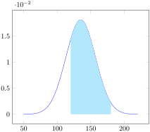

Exercise5.1.1.Normal Distribution Matching Problem.
Problem instructions.
A random variable follows the normal probability distribution with a mean of 135 and a standard deviation of 22. What is the probability that a randomly selected value is between 120 and 180?
NORM.S.DIST(2.05,1)-NORM.S.DIST(- 0.68,1)
A random variable follows the normal probability distribution with a mean of 135 and a standard deviation of 22. What is the probability that a randomly selected value is more than 40?
1-NORM.DIST(40,135,22,1)
A random variable follows the normal probability distribution with a mean of 135 and a standard deviation of 22. What is the probability that a randomly selected value is less than 90?
NORM.DIST(90,135,22,1)
Find the probability for a standard normal distribution: \(P(Z \lt 2.35)\)
NORM.S.DIST(2.35,TRUE)
Exercise5.1.2.Normal Distribution Matching Problem.
Problem instructions.
Find the probability for a standard normal distribution: \(P(Z \gt 2.35)\)
1-NORM.S.DIST(2.35,1)
Find the probability for a standard normal distribution: \(P(-0.86\leq Z\leq 1.76)\)
NORM.S.DIST(1.76,1)- NORM.S.DIST(-0.86,1)
Find the probability for a standard normal distribution: \(P(Z\leq 1.50)\)
NORM.S.DIST(1.5,TRUE)
Find the probability for a standard normal distribution: \(P(Z\geq 1.50)\)
1-NORM.S.DIST(1.5,TRUE)

Exercise5.1.3.Normal Distribution Matching Problem.
Problem instructions.
NORM.S.DIST(2.05,1)-NORM.S.DIST(- 0.68,1)
image
1-NORM.DIST(40,135,22,1)
image
NORM.DIST(90,135,22,1)
image
Find the probability for a standard normal distribution: \(P(Z \lt 2.35)\)
Exercise5.1.4.Normal Distribution Matching Problem.
Problem instructions.
image
Find the probability for a standard normal distribution: \(P(Z \gt 2.35)\)
image
Find the probability for a standard normal distribution: \(P(-0.86\leq Z\leq 1.76)\)
image
NORM.S.DIST(1.5,TRUE)
image
1-NORM.S.DIST(1.5,TRUE)
Exercise5.1.5.
Let \(z\) be the standard normal variable. Find the following: